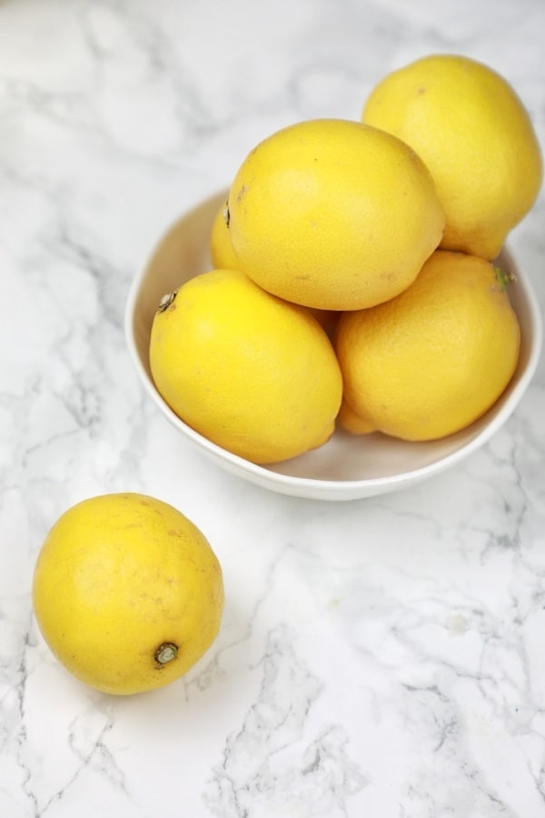
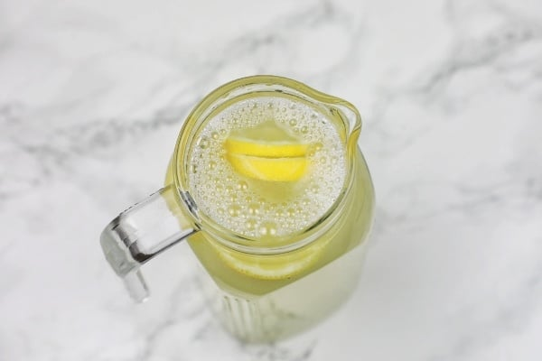
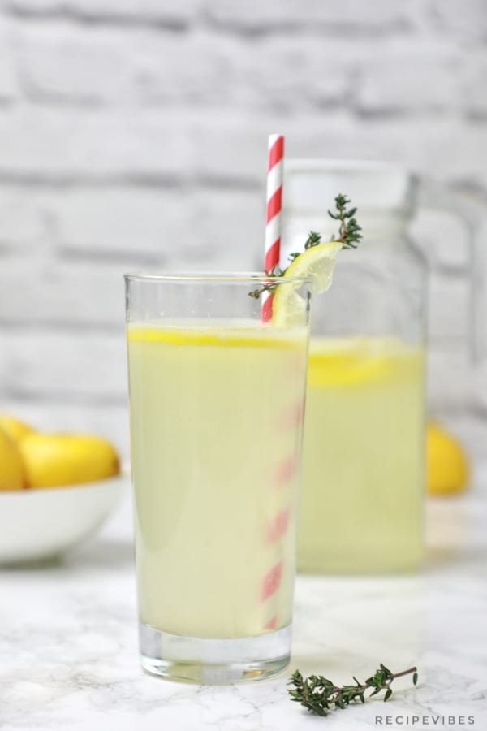

Lemon Juice
TOOLS REQUIRED
- Juicer
- Pitcher or bottle
INGREDIENTS FOR LEMON JUICE
- Lemons
- Water
How to make Juice
- Roll the lemons on the worktop in a circular motion or roll between your palms. This is so they are easy to juice.

- Cut each lemons into 2 equal parts and juice.

- Pour the freshly squeezed lemon juice into a pitcher then add in 2 liters of cold water.
Add in sliced lemons (Optional) and sugar if using

- Stir well and put in the fridge to chill for at least 30 minutes or immediately serve on ice.

- Ready to Drink!